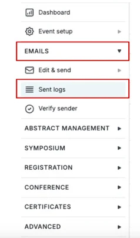
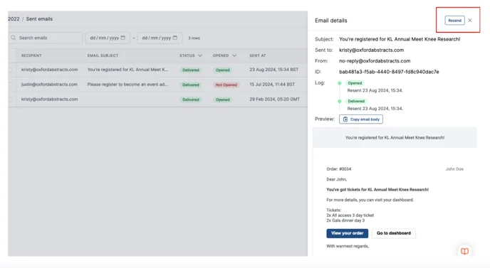
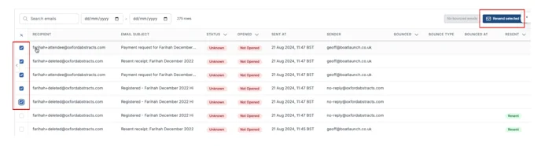

Using the email sent log
You can learn how to use the email sent log, to view details, and resend emails.#
This information is for Event Admins ONLY!
To access the Email Log, on the left-hand menu click on Emails → Sent Logs.

The email log allows you to:
- See the status of the email - if it has been delivered
- View the activity log of each email
- Who the sender of the email is
- If the email has been opened
- If the email has bounced
- If an email has been resent
- Have better search functionality and table filtering options
- As well as the following actions below:
To find out email details, click anywhere on a row you’re interested in, and a screen will appear at the right of the page.
This screen will show you the exact content that was sent and allow you to resend the email by clicking on the Resend Email button at the top right of the screen.

You can select up to five recipients and resend the email that has already been sent, by
ticking the box to the left of the corresponding recipient/row and then clicking on the Resend Selected button at the top right of the page.

You can also rearrange the columns to suit your needs better by simply clicking on the title of the column (e.g. Resent) and then dragging and dropping them in the order you would like them.
Should you need further help please get in touch with our Support team, via the Contact Form Here.
Did this page solve it?
Thanks — this helps us fix it.
Didn't solve it? Ask our support team
No question is too small, and there's no charge for asking. Raise a ticket and someone who knows the software will pick it up.